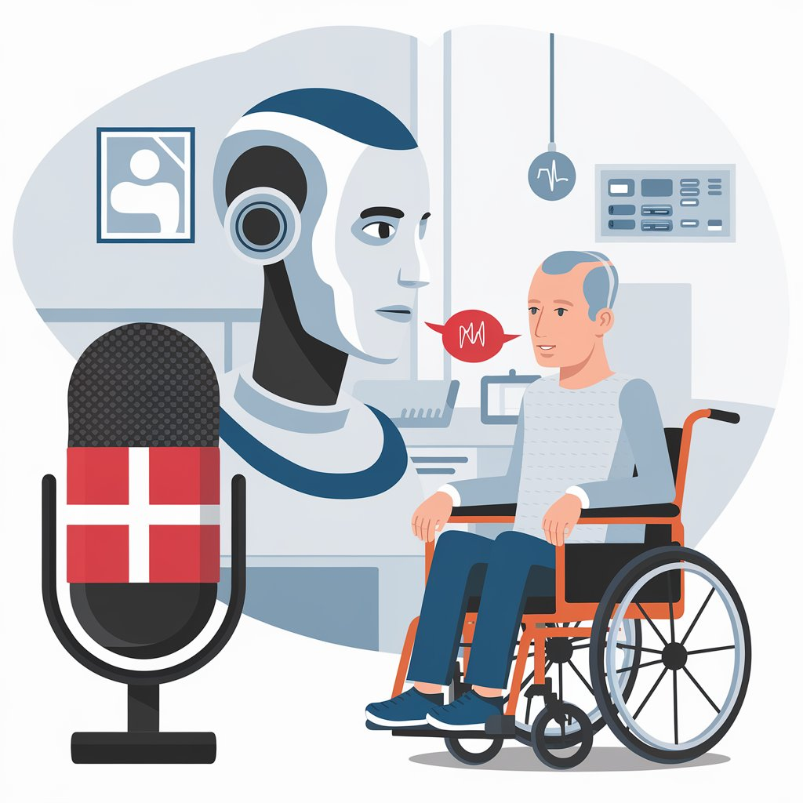
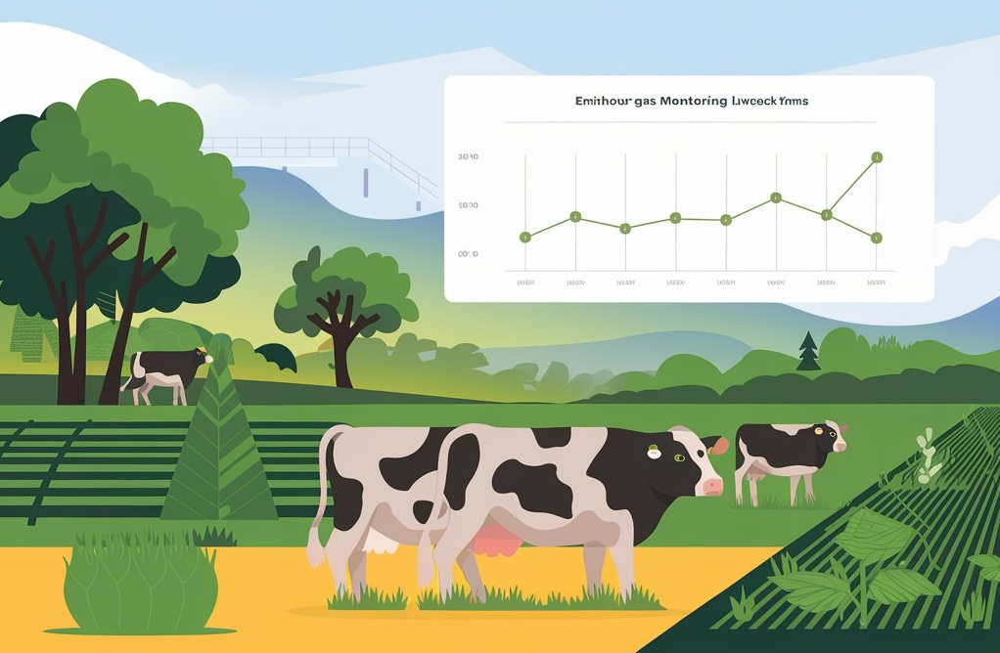

Featured Projects

Danish TTS
Zero-Shot Danish Voice Cloning with translation pipeline for Healthcare.

Sustainable Farm Dashboard
Estimates net greenhouse gas emissions from livestock farms using IPCC methodologies.

Project Management Copilot
Multi-Modal RAG-Based project management assistant.